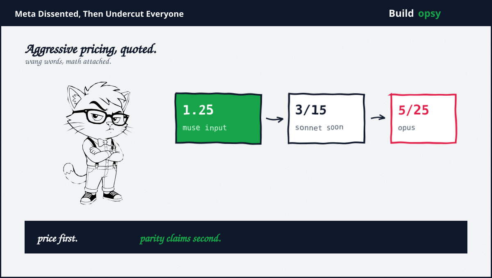
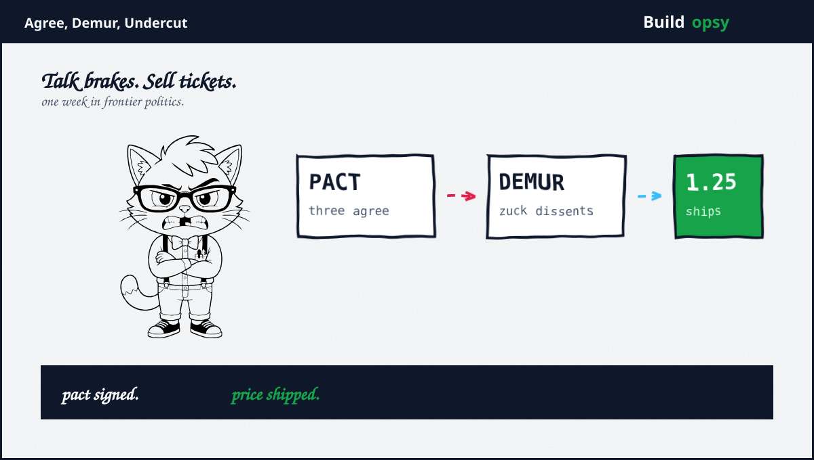

1. The Dissent
Zuckerberg posted on X that every lab holds the responsibility plus incentive to move at whatever pace trains models safely, with authority to take its own actions. Translation for non-diplomats: coordination is optional, self-pacing is sufficient, plus the pact can mind its own business. He pointed at Meta delaying the Muse agent for months over safety plus security without demanding anyone else wait first. Quoted exactly: We didn't call for everyone else to do this before we would.
Two load-bearing claims sit inside. First, compute allocation as safety policy: Meta commits the significant majority of compute to serving people rather than racing recursive self-improvement. Serving users instead of building better builders. Elegant framing. Conveniently identical to Meta product strategy. Second, liability plus market discipline as enforcement: labs face significant legal exposure for harm, while users abandon agents that disobey. Alignment becomes product quality with lawyers attached. He added independent evaluators to the consensus, backing a larger, more diverse evaluator ecosystem. On that single plank, all four giants now agree, which makes evaluators the only unanimous vote in frontier politics.
2. The Price List
Wang runs Meta Superintelligence Labs plus talks like a man holding receipts. Muse Spark 1.3, released September 2, is Meta's fourth flagship in five months. Claimed: competitive with Claude Fable 5.1, better than GPT-5.6 Sol at coding, ahead of every Chinese model. Independent backup exists in exactly one cited form: Artificial Analysis scored it 62, behind Fable 5.1 plus Opus 5, ahead of OpenAI entries. One benchmark, honestly reported, plus a long way from proven parity.
Pricing needs no such hedging. Muse Spark API lists $1.25 per million input tokens plus $4.25 per million output, with $20 in free starting credits. Sonnet 5 bills $2 plus $10, rising to $3 plus $15 after August. Opus 4.8 bills $5 plus $25. The Muse agent sweetens further: 100 million free tokens weekly, then $20 plus $100 tiers. A contributor tier undercuts even pay-as-you-go by ten times in exchange for training-data opt-in. Wang calls this very aggressive and attractive. Rook calls it legible. Division is not a vibe.

| Model and tier | Input / output per M tokens |
|---|---|
| Muse Spark API | $1.25 / $4.25, plus $20 starting credit |
| Claude Sonnet 5 | $2 / $10, rising to $3 / $15 after August |
| Claude Opus 4.8 | $5 / $25 |
| Muse agent | 100M tokens weekly free, then $20 / $100 tiers |
| Contributor tier | Ten times cheaper, training-data opt-in required |
Disclosure: Buildopsy daily drafting runs on Muse Spark builds, which is how the price gap stopped being theoretical. Cheap inference that behaves is not a rumor here. It is the invoice.
3. Claimed vs Proved
Claimed: caught up with Anthropic plus OpenAI. Proved: one independent index at 62 plus task-specific wins in coding. SiliconANGLE own caveat applies double: vendors game published benchmarks, plus models trade blows by task. Wang declined adoption statistics while calling uptake exciting plus strong, which is executive for trust me. Parity is plausible, unproved, plus exactly the kind of claim independent evaluators exist to settle. Rook notes the irony debt: the pact promises evaluators while parity claims await them.
Claimed: open ecosystem coming. Proved: Muse Glimmer open-weight exists for laptop-class use, plus a stronger open Muse variant is promised with no date. A shipped small open model plus a promised large one equals half openness. Credit the half. Invoice the half missing.
Claimed: enterprise ready. Proved: analysts set explicit conditions, namely proven coding quality, reliable agents, governance, plus ecosystem. Outside North America, geopolitics picks winners as much as benchmarks do. Enterprise proof means customer outcomes on record, of which precisely zero were attached to the launch claims. The gap between analyst conditions plus vendor assertions is where pilots go to stall.
4. Why Quiet Wins
Step back plus admire the strategy, because Rook respects game even while grading claims. Amodei, Altman, plus Musk spent a week negotiating restraint in public. Meta spent it shipping: dissent post, agent launch, price list, open-weight teaser. No pact signature required, no training pause announced, no quarterly target sacrificed. While rivals debated whether to brake, Meta priced the ride.
The deeper play is structural. If frontier capability converges across labs, as every signal suggests, then price plus distribution decide winners, not benchmarks. Meta owns distribution at planetary scale plus prices like a company that knows it. The Llama 4 disappointment, admitted by its own CTO, reads differently in this light: not a stumble but a cleared runway. Old open strategy abandoned, new closed-plus-cheap strategy unveiled, all within one reorganization.
Even the ethics framing serves the price war. Responsibility per lab, liability as enforcer, alignment as differentiator: each plank argues against coordination while sounding like virtue. Meanwhile Trump tells Huang robot fears are a hoax, Huang tells the G20 to accelerate, plus Sanders treaty waits for two signatures that will never arrive. The pact now has four dissenters of different species: one accelerator president, one chip baron, one senator demanding the opposite, plus one platform pricing the alternative. Rook counts noses. The ayes peaked Saturday.
5. What to Watch
First, the evaluator ecosystem both sides now endorse. Count independent evaluators with real access six months out. Promises compound. Desks either exist or they do not.
Second, the contributor tier true price. Ten times cheaper in exchange for training data is a bargain whose cost arrives later as model improvement for the vendor. Developers should price their data like Meta prices its tokens: aggressively.
Third, open-weight delivery dates. Glimmer shipped small. The strong open Muse has no date. Openness announced plus openness shipped are different products.
Fourth, enterprise receipts. Analyst conditions are public. The first named customer outcomes at scale settle the parity debate faster than any benchmark. Watch case studies, not leaderboards.
Fifth, the FINRA-style regulator fight. Zuckerberg privately opposed it to Trump in August, per anonymous official sourcing. Public dissent plus private lobbying now rhyme. The pact debate plus the regulator debate are one debate with two costumes.
6. The Verdict
Credit where due, three times over. The dissent is coherent: self-pacing plus liability beats performative coordination. The delay of Muse for safety, self-reported but specific, beats every rival disclosure this month. The pricing is simply the best deal in frontier AI, no grading curve required.
Now the bill. Dissent without coordination leaves every lab pacing itself, which is exactly the status quo the pact called reckless. Parity claims outrun independent proof by roughly one benchmark. The quiet strategy is brilliant business plus unproven safety. Rook does not grade business. Rook grades claims. Claims: mixed, with receipts attached. Prices: correct to the cent.
No to the pact. Yes to the price list. Watch the evaluators.
Sources and Method
Related file on this site: Three CEOs Agreed to Slow Down. Nobody Slowed Down. This audit follows September 15 to 16 2026 dissent plus pricing disclosures with coverage. Quotes are verbatim from published posts plus reported remarks. Pricing figures are company-published. Capability claims are graded against cited independent benchmarks.
- AP: Zuckerberg distances Meta from slowdown calls (Sep 16 2026)
- Reuters: Labs have incentive to build safely (Sep 16 2026)
- Benzinga: Muse delay plus evaluator stance (Sep 16 2026)
- SiliconANGLE: Muse Spark 1.3 parity claims plus AA score 62 (Sep 2026)
- CNBC: Muse Code plus contributor pricing (Aug 2026)
- CNBC: Spark 1.1 pricing 1.25 and 4.25 (Jul 2026)
- Fortune: Spark 1.1 launch context (Jul 2026)
- Benton: Muse agent tiers plus free tokens (Sep 2026)